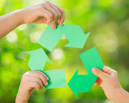

O que é reciclagem e por que ela é importante?
A reciclagem é o processo de transformar resíduos, que normalmente seriam descartados, em novos materiais e produtos. A sua importância reside na redução do impacto ambiental, na conservação de recursos naturais e na promoção de uma economia mais sustentável.
Por que a reciclagem é importante:
Reduz a necessidade de extrair recursos naturais: Ao reaproveitar materiais, diminuímos a pressão sobre as reservas naturais e a exploração desenfreada de matérias-primas.
Diminui a poluição: A reciclagem reduz a quantidade de resíduos que vai para os aterros sanitários, minimizando a contaminação do solo e da água.
Economiza energia: A fabricação de novos produtos a partir de materiais reciclados consome menos energia do que a produção a partir de matérias-primas virgens.
Reduz o consumo de água: Assim como a energia, a produção de materiais reciclados também requer menos água do que a produção a partir de recursos naturais.
Cria empregos e oportunidades econômicas: A reciclagem gera empregos nas áreas de coleta, triagem, processamento e produção de novos produtos.
Promove a sustentabilidade: A reciclagem é uma das estratégias essenciais para a construção de uma sociedade mais sustentável, que equilibra as necessidades humanas com a preservação do meio ambiente.
Contribui para a saúde pública: A reciclagem ajuda a reduzir a contaminação do ambiente e, consequentemente, contribui para a proteção da saúde pública.
A reciclagem é, portanto, uma ferramenta fundamental para a proteção do planeta e para o desenvolvimento de uma sociedade mais consciente e sustentável.